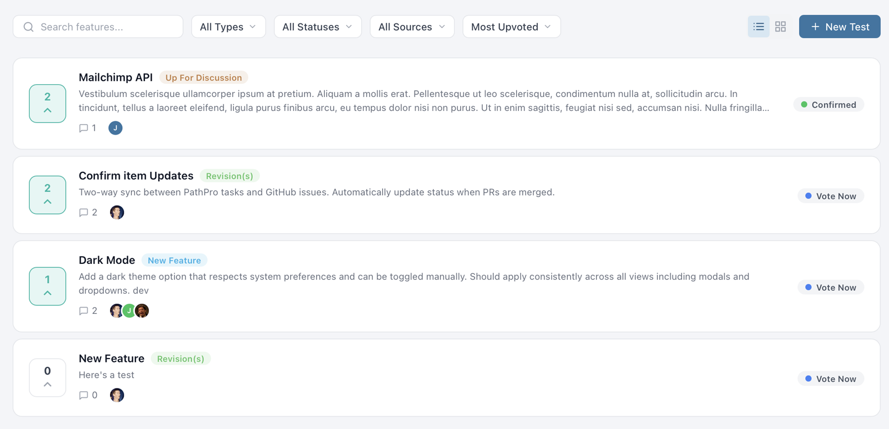
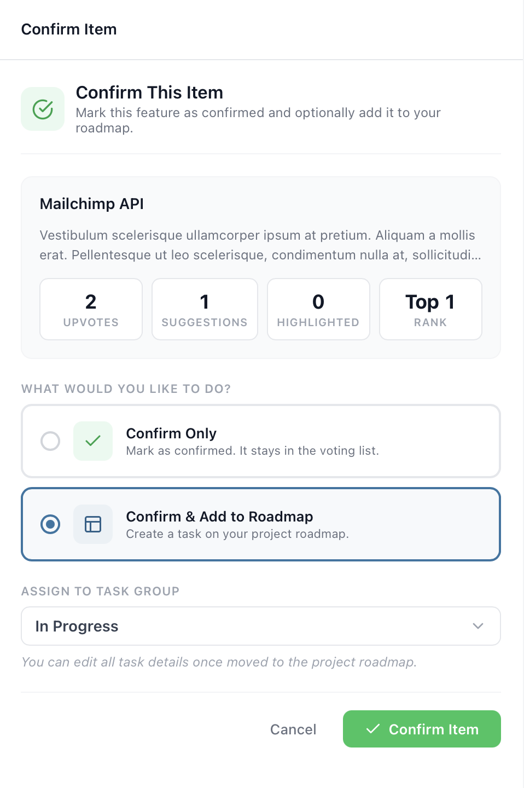

Feature Voting
Feature voting lets your community tell you what matters most to them. Instead of guessing which features to build next, you can let the people who use your product propose ideas and vote on each other's suggestions -- giving you a data-driven signal for prioritization.
How Feature Voting Works
The feature voting system creates a two-way conversation between your team and your community. Here's the overall flow:
- Features are added -- Either your team creates features directly, or community members submit ideas that get promoted to the voting board.
- Community votes -- Registered community members browse the feature list and upvote the ones they care about most. Each person gets one vote per feature.
- Rankings emerge -- Features naturally sort by popularity, giving your team a clear picture of demand.
- Team takes action -- When a feature accumulates enough interest, your team can confirm it and adopt it to the roadmap as a task.
This cycle keeps your product development aligned with what your users actually want. Instead of relying on the loudest voice in the room or internal assumptions, you have quantifiable data showing which features will deliver the most value to the most people.
Feature Types
Every feature in PathPro is categorized by type, which helps both your team and your community quickly understand what kind of request they're looking at. Feature types include:
- Enhancement -- A request to improve or extend existing functionality. These are the most common type and represent incremental improvements to your product.
- Bug -- A report of something that isn't working correctly. Surfacing bugs through the voting system lets your community help you prioritize which fixes matter most.
- Integration -- A request to connect your product with a third-party tool or service. Integration requests often cluster around a few popular tools, making vote counts especially useful for prioritization.
- New Feature -- A request for entirely new functionality that doesn't exist yet. These tend to generate the most discussion and votes.
Each type is displayed with a distinct color-coded chip on the feature card, making it easy to visually scan the voting board and distinguish between different kinds of requests. Your team can filter the feature list by type to focus on a specific category during planning sessions.

View Modes and Filtering
PathPro's voting page supports two view modes so your community can browse features in the layout that works best for them:
- List View -- A compact, scannable list showing the feature title, type chip, vote count, and status. Best for quickly reviewing many features at once.
- Grid View -- A card-based layout that shows more detail per feature, including a description preview and the feature author. Better for exploring individual features in depth.
Both views support the same filtering and sorting options:
- Filter by Type -- Show only Enhancements, Bugs, Integrations, or New Features.
- Filter by Status -- Focus on features that are open for voting, confirmed, or already in progress.
- Filter by Source -- See features created by team members vs. community submissions.
- Sort by Votes -- Rank features by total vote count to surface the most popular ideas.
- Sort by Recent -- See the newest features first.
Filters persist during your session, so you can combine them -- for example, showing only "Enhancement" features sorted by votes -- to get exactly the view you need. Your team can use these same filters during sprint planning to identify the highest-impact features to adopt.
Upvoting Mechanics
Upvoting is the core interaction on the feature voting page. Here's how it works:
Any registered community member can upvote a feature by clicking the vote button on its card. Each user gets exactly one vote per feature -- there's no way to vote multiple times on the same item. This ensures that vote counts accurately represent the number of people who want a feature, not the enthusiasm of a few power users.
Votes can be removed at any time. If a community member changes their mind or accidentally votes, they can click the vote button again to retract their vote. The total count updates in real time.
Vote counts are displayed prominently on every feature card, along with the current ranking. The ranking is simply the position of the feature when the list is sorted by total votes. This makes it easy for your community to see where their favorite features stand relative to others.
Depending on your project settings, you can control whether logged-out visitors can see vote counts or if viewing counts requires registration. This lets you decide whether to use visible vote counts as social proof to encourage signups.
Feature Statuses
Features in PathPro move through a lifecycle defined by their status. The two primary statuses visible to your community are:
- Vote Now -- The feature is open for voting. Community members can upvote it, and it appears in the active voting list. This is the default status for newly created features.
- Confirmed -- Your team has reviewed the feature and decided to build it. Confirmed features remain visible on the voting page so the community knows their votes were heard, but they are visually distinguished from features still in the voting phase.
Changing a feature's status to Confirmed sends a strong signal to your community. It tells them that their feedback has directly influenced your roadmap, which builds trust and encourages continued participation. Many teams announce confirmed features in their release notes or community channels to close the feedback loop.
Behind the scenes, your team can also use internal notes and comments on features to discuss feasibility, estimate effort, and decide whether to confirm or decline a request. This deliberation happens privately -- the community only sees the final status change.
Adopting Features to Your Roadmap
When a feature has accumulated enough votes and your team decides to build it, you can adopt it directly to your roadmap. The adoption workflow bridges the gap between what your community wants and what your team is actively working on.
To adopt a feature, open its detail panel and click "Confirm This Item". Then, you'll select the option "Confirm & Add to Roadmap". You'll be prompted to choose a task group where the new task should live and can optionally edit the title and description before it's created. PathPro automatically links the resulting task back to the original feature, so there's a clear trail from community request to roadmap item.
Once adopted, the feature's status updates to Confirmed, and anyone who voted for it can see that it's now on the roadmap. If you later ship the feature and publish release notes, the connection from vote to release note creates a complete feedback loop.
This workflow is one of PathPro's most powerful capabilities. It transforms feature voting from a passive suggestion box into an active pipeline that feeds directly into your team's sprint planning.

PathFox: Next-Level Demand Analysis
PathFox, PathPro's built-in product intelligence engine, works alongside your feature voting data to surface insights your team might otherwise miss. Rather than writing content for you, PathFox analyzes the community feedback flowing through your voting board -- identifying demand patterns, detecting duplicate requests, and gauging sentiment across your feature list.
When your voting board has dozens or hundreds of features with comments scattered across them, PathFox helps you cut through the noise. It can identify clusters of related requests that might look different on the surface but are asking for the same underlying capability. It also highlights features where community sentiment is shifting -- a feature that's gaining momentum or one where recent comments suggest frustration.
PathFox analysis is available on demand and visible only to team members. It complements your own judgment by giving you a data-driven read on what your community is telling you, so you can prioritize with confidence during triage and sprint planning sessions.